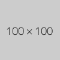

During min-max-width calculations percent width should be ignored. But it should be applied during layout. The max-width of such image is set to its original width. The min-width is set to 0.
| The image should be on next line. The blank has 100px length.  |
| Table in div with width less than 100px. Image doesn't affect table's min-width. |
| Table in with width less than 100px. Image doesn't affect table's min-width. |